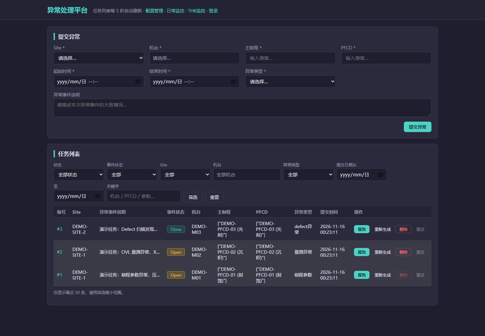
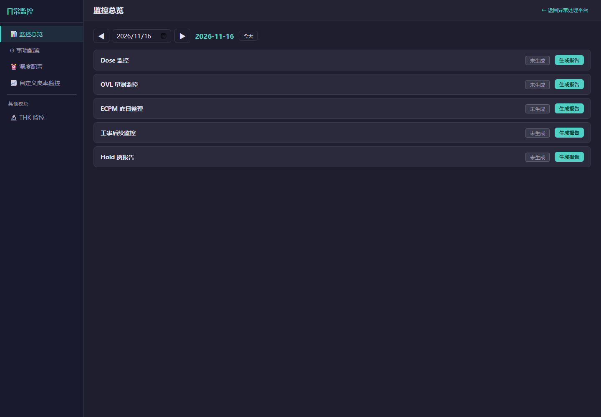

02
跑起来长这样
截图取自本仓库的演示版




本机三行命令，不需要任何内网权限
cd demo pip install -r requirements.txt python seed_demo_data.py # 生成演示任务与数据 python start_demo.py # → http://127.0.0.1:15001 登录密码：1
支持两条链路：OVL 量测与 Defect 缺陷。CD 链路涉及真实接口，演示模式下已关闭（点了会提示改用另外两条）。
截图取自本仓库的演示版


哪些是真的，哪些是脱敏替换
按异常类型分流到三套引擎、统计口径、图表生成、任务状态机
取数适配、字段对齐、SQLite 落库、报告归档
密钥走环境变量、内网地址换 DEMO_HOST、机台与字段换占位
保留的是「怎么判断、怎么组织数据」；换掉的是「具体在哪台机、哪个字段、哪个地址」。
保密说明：这个 Demo 是从生产系统复制后做脱敏的独立副本，业务逻辑保持原样，所有编号、地址、密钥与业务字段已替换为占位值，且不包含任何内部系统的连通配置。